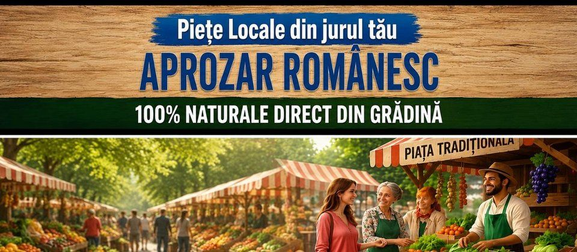
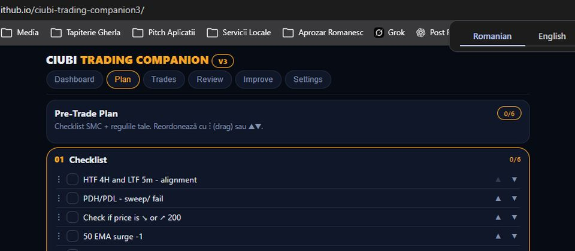
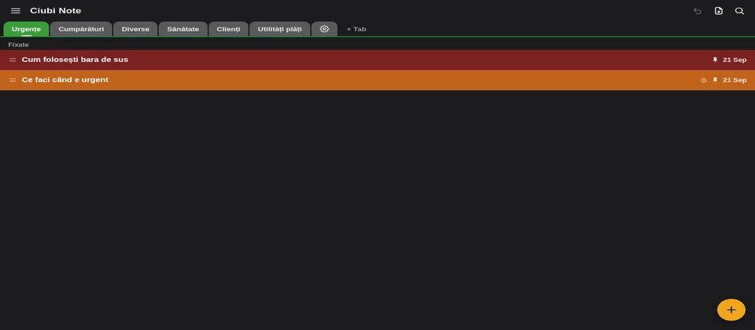
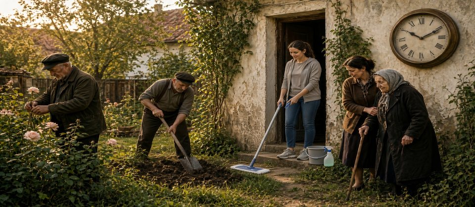

Hrană · live
Aprozar Românesc
De la grădină, pe masă. Fără intermediari care iau marja.
Intră în Aprozar →O întrebare, înainte de aplicații
În era AI-ului, mulți și-au pierdut slujba. Alții o vor pierde. Ciubi e platforma unde românii își fac viața mai ușoară: de la un job de o zi sau câteva ore, până la treabă cu durată — în toate domeniile.
Aplicațiile astea trebuie să fie vena groasă prin care curge energia țării. Românii sunt inteligenți și plini de resurse. Merită un trai bun — sau foarte bun.
Suntem ca în stare de război: trebuie inventivitate și toată forța vitală pe care o avem. Problema nu e lipsa de oameni deștepți. E că s-a rupt conexiunea. Nu mai sunt comunități prin care să prosperăm.
Vremurile grele au fost întotdeauna terenul pe care se inventează lucruri noi. Au început să apară comunități — și asta e semn că nu stagnăm. Ciubi e hub-ul. Vena. Locul unde aceste aplicații curg una în alta.
Fiecare e o ușă. Împreună țin românul în ecosistem — hrană, meserie, marfă de aici, disciplină, notițe, treabă pe zi.

Hrană · live
De la grădină, pe masă. Fără intermediari care iau marja.
Intră în Aprozar →
Meserii · live
Meseriași verificați, lângă tine. Cauți după oraș, nu prin noroc.
Intră în Servicii →
Fabricat aici · live
De la zacuscă la unelte. Doar marfă din România.
Intră în magazin →
Disciplină · live
Nu e broker. E asistentul care te oprește înainte să-ți rupi contul.
Intră în Companion →
Note · live
Urgențe, cumpărături, sănătate, clienți, utilități. Liste, poze, audio, PIN.
Intră în Note →
Treabă pe zi · în curând
Grădinar, săpat, curățenie, grijă de oameni. Un ceas — treaba ține o zi, cel puțin la început.
Următoarea venă, nu e live încăDacă vrei să ajuți — ca partener, ca om care pune treabă, sau ca român care vrea comunitate — un mesaj e de ajuns.
WhatsApp 0770 148 119 cluj1313@gmail.com